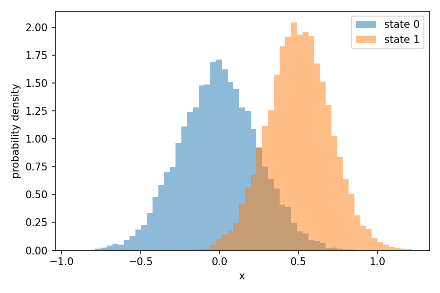
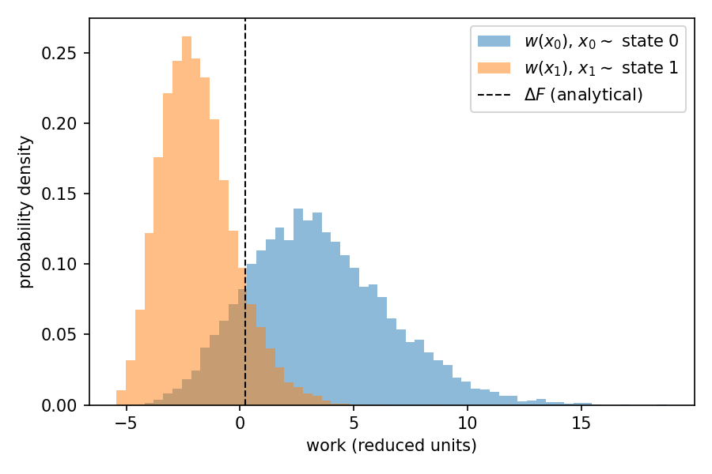
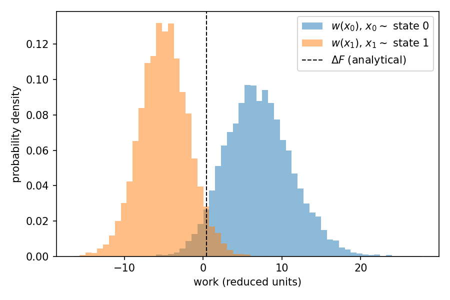

BayesBAR for two harmonic oscillators¶
In this example, we use BayesBAR to compute the free energy difference between two harmonic oscillators that have different force constants and different equilibrium positions. BayesBAR is the Bayesian Bennett acceptance ratio method, the two-state special case of BayesMBAR, and is the natural choice when there are only two states. Because the potential energy is quadratic, the free energy difference can be computed analytically, which lets us validate the result returned by BayesBAR.
We work through two cases: first a pair of one-dimensional oscillators, where the configuration space overlap can be visualized directly, and then a pair of four-dimensional oscillators, where it cannot and we rely on the work projection instead.
In both cases we follow three steps:
- Draw samples from the Boltzmann distribution of each state.
- Compute the reduced potential energy of every sample in both states and collect them into a \(2 \times N\) matrix used as input to BayesBAR.
- Run BayesBAR and compare its result to the analytical value.
1. Two 1D harmonic oscillators¶
The reduced potential energy of a one-dimensional harmonic oscillator is
where \(k\) is the force constant and \(\mu\) is the equilibrium position. Its free energy (up to an additive constant) is \(F = -\tfrac{1}{2}\ln(2\pi/k)\), so the free energy difference between two oscillators depends only on their force constants,
and is independent of the equilibrium positions.
Define the two oscillators and compute the analytical free energy difference.
mu = np.array([0.0, 0.5]) ## equilibrium positions
k = np.array([16.0, 25.0]) ## force constants
analytical_dF = 0.5 * np.log(k[1] / k[0])
print("analytical DeltaF = 0.5 * ln(k2 / k1) =", analytical_dF)
Draw samples from the Boltzmann distribution of each state and compute the reduced potential energies of all samples in both states. Note that the two equilibrium positions are kept close enough that the two states share configurations; without this overlap BAR cannot bridge the states.
n = 10000
sigma = np.sqrt(1.0 / k)
np.random.seed(0)
x = [np.random.normal(mu[i], sigma[i], (n,)) for i in range(2)]
x = np.concatenate(x)
u = 0.5 * k.reshape((-1, 1)) * (x - mu.reshape((-1, 1))) ** 2
num_conf = np.array([n, n])
The energy matrix u has shape (2, 2 * n): row i holds the reduced
potential energy of every sample evaluated in state i.
Checking the configuration space overlap¶
BAR can only bridge the two states if their configuration spaces overlap. Because \(x\) is one-dimensional here, we can visualize this overlap directly by plotting the probability distributions of the configurations sampled from each state.
x0, x1 = x[:n], x[n:]
bins = np.linspace(x.min(), x.max(), 60)
plt.hist(x0, bins=bins, density=True, alpha=0.5, label="state 0")
plt.hist(x1, bins=bins, density=True, alpha=0.5, label="state 1")
plt.xlabel("x")
plt.ylabel("probability density")
plt.legend()
plt.show()

The two distributions clearly overlap, so the two states share configurations and BAR can bridge them.
Visualizing the overlap directly is only possible because \(x\) is one-dimensional. When \(x\) is high-dimensional, plotting the distribution of the configurations is no longer feasible (see the four-dimensional case below). However, we can always project the configurations onto the work required to switch a configuration between the two states,
which is one-dimensional regardless of the dimensionality of \(x\). We then plot the distribution of \(w\) evaluated on the samples from each state, \(w(x_0)\) with \(x_0 \sim p_0\) and \(w(x_1)\) with \(x_1 \sim p_1\).
w0 = u[1, :n] - u[0, :n] ## w(x) for samples from state 0
w1 = u[1, n:] - u[0, n:] ## w(x) for samples from state 1
The two distributions overlap in this projected, one-dimensional space. By the Crooks fluctuation theorem they cross at \(\Delta F\), and the size of the region where they overlap reflects the configuration space overlap of the two states: more overlap means a more reliable free energy estimate.
bins = np.linspace(min(w0.min(), w1.min()), max(w0.max(), w1.max()), 60)
plt.hist(w0, bins=bins, density=True, alpha=0.5, label=r"$w(x_0)$, $x_0 \sim$ state 0")
plt.hist(w1, bins=bins, density=True, alpha=0.5, label=r"$w(x_1)$, $x_1 \sim$ state 1")
plt.axvline(analytical_dF, color="k", ls="--", lw=1, label=r"$\Delta F$ (analytical)")
plt.xlabel("work (reduced units)")
plt.ylabel("probability density")
plt.legend()
plt.show()

The two work distributions overlap around \(\Delta F\), consistent with the overlap we saw in the configuration distributions.
Running BayesBAR¶
Run BayesBAR to compute the free energy difference between the two states.
Compare the free energy difference from BayesBAR with the analytical reference. BayesBAR reports the posterior mode and mean as estimates of the free energy difference, and the posterior standard deviation as its uncertainty. The estimate agrees with the analytical value \(\Delta F \approx 0.223\) within the reported uncertainty.
np.set_printoptions(precision=3)
print("analytical DeltaF :", analytical_dF)
print("posterior mode :", bar.dF_mode)
print("posterior mean :", bar.dF_mean)
print("posterior std :", bar.dF_std)
analytical DeltaF : 0.22314355131420976
posterior mode : [0.24]
posterior mean : 0.24024236854158337
posterior std : 0.023093738408070375
2. Two 4D harmonic oscillators¶
We now repeat the calculation for two four-dimensional harmonic oscillators. This illustrates the case where the configuration space is high-dimensional and cannot be visualized directly.
The reduced potential energy of a \(d\)-dimensional harmonic oscillator is
where \(k_i\) is the force constant and \(\mu_i\) is the equilibrium position along dimension \(i\). Its free energy (up to an additive constant) is \(F = -\tfrac{1}{2}\sum_i \ln(2\pi/k_i)\), so the free energy difference between two oscillators is
Define the two four-dimensional oscillators. Each state has its own force constant and equilibrium position along each of the four dimensions.
d = 4
mu = np.array([[0.0, 0.0, 0.0, 0.0],
[0.5, 0.3, 0.4, 0.2]]) ## equilibrium positions, shape (2, d)
k = np.array([[16.0, 20.0, 25.0, 18.0],
[25.0, 30.0, 20.0, 22.0]]) ## force constants, shape (2, d)
analytical_dF = 0.5 * np.sum(np.log(k[1] / k[0]))
print("analytical DeltaF =", analytical_dF)
Draw samples and compute the reduced potential energies, exactly as before but now with four-dimensional configurations.
n = 10000
sigma = np.sqrt(1.0 / k) ## shape (2, d)
np.random.seed(0)
x = [np.random.normal(mu[i], sigma[i], (n, d)) for i in range(2)]
x = np.concatenate(x) ## shape (2 * n, d)
u = 0.5 * np.sum(
k[:, None, :] * (x[None, :, :] - mu[:, None, :]) ** 2, axis=2
)
num_conf = np.array([n, n])
Checking the configuration space overlap¶
Since \(\mathbf{x}\) is now four-dimensional, we cannot plot the distribution of the configurations directly. Plotting the marginal distribution of each coordinate does not help either, because overlap of the marginals does not guarantee overlap of the full joint distribution. Instead, we rely on the work projection \(w(\mathbf{x}) = u_1(\mathbf{x}) - u_0(\mathbf{x})\), which is one-dimensional regardless of the dimensionality of \(\mathbf{x}\), and plot the distribution of \(w\) evaluated on the samples from each state.
w0 = u[1, :n] - u[0, :n] ## w(x) for samples from state 0
w1 = u[1, n:] - u[0, n:] ## w(x) for samples from state 1
bins = np.linspace(min(w0.min(), w1.min()), max(w0.max(), w1.max()), 60)
plt.hist(w0, bins=bins, density=True, alpha=0.5, label=r"$w(x_0)$, $x_0 \sim$ state 0")
plt.hist(w1, bins=bins, density=True, alpha=0.5, label=r"$w(x_1)$, $x_1 \sim$ state 1")
plt.axvline(analytical_dF, color="k", ls="--", lw=1, label=r"$\Delta F$ (analytical)")
plt.xlabel("work (reduced units)")
plt.ylabel("probability density")
plt.legend()
plt.show()

The two work distributions overlap around \(\Delta F\), confirming that the two states share enough configurations for BAR to bridge them.
Running BayesBAR¶
Run BayesBAR and compare its result with the analytical value \(\Delta F \approx 0.415\).